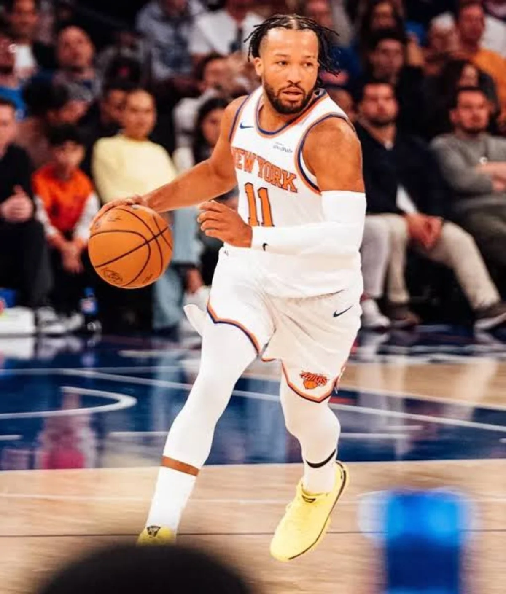
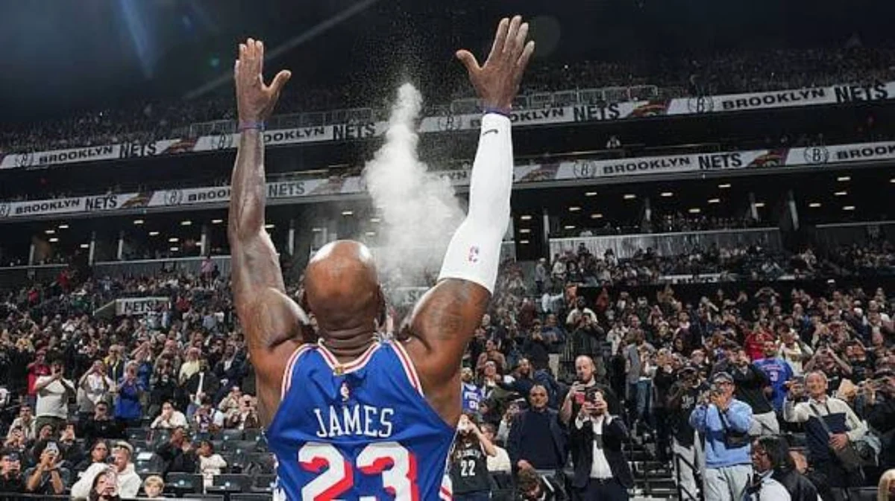
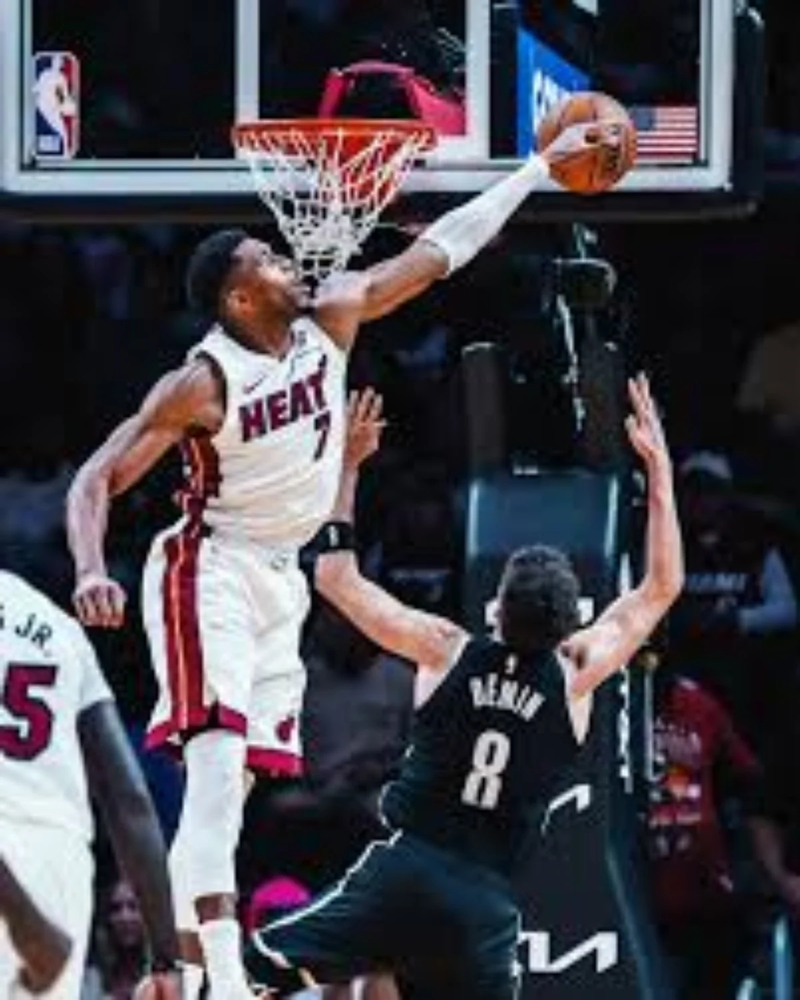

THE CROWN IS HEAVIER IN NEW YORK.
THE REAL TEST: REPEATING IS HARDER THAN ARRIVING
Last spring changed the entire conversation around New York basketball. For decades, the Knicks carried the expectations of Madison Square Garden without the payoff. Then Jalen Brunson led this franchise back to the top, ending the 53-year championship drought and changing how the rest of the league looks at New York. The Knicks are no longer the sentimental team with a hungry fan base. They are the champions everybody has marked on the schedule.
We give Brunson his flowers because he's earned them. The size questions, the physicality questions and the old argument about whether a smaller lead guard can be the best player on a championship team have already been answered on the court. His game isn't built on the highlight that travels farthest on social media. It's built on footwork, late-clock decisions, contact, and the ability to manufacture offense when a defense knows exactly who's getting the ball.
But this year is a different kind of challenge. Karl-Anthony Towns gives New York another half-court scoring dimension. OG Anunoby and Mikal Bridges provide wing defense, while Josh Hart supplies the hustle that doesn't show up in a graphic. The danger is thinking the exact same formula automatically produces the exact same result. Opponents have had an entire summer to dissect their weak points, and champions find out quickly that nobody is saving their best game for somebody else anymore.
The season opens with Philadelphia coming to town carrying LeBron James and Jaylen Brown. That is not a ceremonial matchup. It is a reminder that the Eastern Conference spent the offseason building teams specifically capable of beating the Knicks. New York must stay hungry without acting desperate, keep the offense dynamic rather than overly Brunson-dependent, and treat last year's championship as a standard—not a guarantee.
4DK WATCH: Can Brunson control another deep playoff run while the Knicks manage the weight of being the hunted?

PHILADELPHIA HAS THE NAMES. DOES IT HAVE THE FIT?
FOUR STARS. ONE BASKETBALL. ZERO ROOM FOR EXCUSES
Philadelphia didn't make a small adjustment. The Sixers threw a completely new set of expectations onto a roster that already had two big-time offensive players. LeBron James and Jaylen Brown have joined Joel Embiid and Tyrese Maxey. That's the kind of lineup fans build in a video game, but games are decided by spacing, rotations, defensive effort, and knowing whose shot matters when everyone believes he can make it.
LeBron is one of the greatest decision-makers the sport has ever seen, and at this stage of his career the smart move is not asking him to repeat the workload of a younger version of himself. He can organize an offense, punish mismatches and make life easier for everyone. But the Sixers have to resist the temptation to become a team that stands around watching him solve every possession. Tyrese Maxey's speed and relentless rim pressure must remain a central part of the offense, not something he's asked to put away.
Then there's Jaylen Brown. We know what he brings in transition and at the point of attack, but his fit is bigger than scoring. Brown has to be the aggressive two-way presence who makes a crowded offense functional, especially when other stars need a breather. He gives Philadelphia an athletic, physical wing who can change the tenor of a playoff series. VJ Edgecombe is another young weapon who can't be forgotten just because the names above him are louder.
Everything still circles back to Embiid's health. At his best, he is the kind of interior force who can tilt a seven-game series. But a championship plan cannot depend on a perfect medical calendar. Philadelphia needs lineups that can survive without him, a defense that doesn't collapse in transition, and enough commitment from the veterans to get through an 82-game season instead of peaking in November. Opening night against the defending champions will tell us something. The months after that will tell us far more.
4DK WATCH: Will this look like a true championship team built around complementary skills—or simply four stars sharing a jersey?

THE WEST HAS A SCORE TO SETTLE.
THE NEXT GREAT RIVALRY IS ALREADY HERE
Oklahoma City won 64 games last season and still didn't get out of the Western Conference. San Antonio took the Thunder to seven and won the series. Then the Spurs reached the NBA Finals and found out the last step is the hardest one. These aren't two interesting young teams anymore. These are two teams with an actual argument about who should control the next era of basketball.
Shai Gilgeous-Alexander is the kind of offensive centerpiece who turns a possession into a decision tree for the defense. He's patient, he's physical, and he gets to his spots without needing a dozen unnecessary dribbles. Oklahoma City has built around that with depth, speed, defensive pressure and a winning structure. The question now is how the group responds to a postseason disappointment instead of assuming its regular-season dominance automatically translates to the conference title.
Chet Holmgren is one of the most important swing players in that equation. His shooting and shot blocking change the geometry of a game, but playoff basketball against elite size asks for more than perimeter skill. We want to see him establish stronger interior position, rebound through contact and create offense even when defenders are permitted to crowd him. The Thunder also need Jalen Williams healthy and decisive, especially when opponents load up on Shai late in games.
The Spurs, meanwhile, have Victor Wembanyama—one of the rare players who alters a matchup before the opening tip. His reach, timing and defensive range make normal shots feel like bad decisions. But the real leap is about moving from spectacular individual dominance to consistent championship execution. Stephon Castle, De'Aaron Fox and Dylan Harper give San Antonio different kinds of backcourt creation. That raises their ceiling and their responsibility. It can't be every possession ending in a bailout just because Wemby can rescue one. These teams meet on opening night, and we can't think of a better way to open a new NBA season.
4DK WATCH: Can Oklahoma City answer San Antonio’s size and physicality? And is Wemby ready to turn another great year into a championship?

MIAMI WENT ALL IN ON GIANNIS.
NO MORE REBUILDING LANGUAGE IN SOUTH BEACH
When Giannis Antetokounmpo put on a Miami Heat uniform, the expectations changed overnight. That's what happens when a two-time MVP joins a franchise that's never been interested in patiently accepting irrelevance. Miami had been stuck in the middle—tough, competitive and capable of annoying people, but short of the overwhelming top-end talent that truly threatens to win the East. Giannis changes that ceiling immediately.
The Giannis–Bam Adebayo partnership is fascinating because the best version of it could overwhelm teams defensively. We're talking about length, mobility, switchability and two players who can erase an opponent's first plan at the rim. On offense, the interesting question is not whether they can score in space. Giannis with a runway remains a nightmare. It's whether Miami can keep the lane open when both bigs occupy areas of the floor that defenses want to crowd.
That's why adding Klay Thompson matters, even if nobody should confuse today's Klay with the prime version who helped define a dynasty. His reputation still changes how defenders position themselves. Andrew Wiggins, Davion Mitchell, Tim Hardaway Jr. and Bobby Portis give Miami different combinations of defense, shotmaking and experience. Spoelstra's job is to create an offensive identity where Giannis attacks the basket without sacrificing the space Bam needs to work as a scorer and playmaker.
Preseason chemistry can look beautiful until opponents start targeting the same matchup for 48 minutes. We want to see how Miami responds when the threes aren't falling, when the game slows into a half-court grind, and when Giannis has to trust a teammate to make the big play rather than forcing his way through three bodies. We know the ambition. Now we need to see the infrastructure support it.
4DK WATCH: Can Giannis and Bam become the league’s nastiest frontcourt without the spacing issues that can stop a title run?

IT’S LUKA’S FRANCHISE NOW.
NO MORE LEBRON SAFETY NET
The Lakers no longer have LeBron James to share the spotlight or absorb the biggest pressure. That isn't a criticism of LeBron, and it isn't an excuse for Luka Dončić. It's simply where the franchise is now. Luka is the face, the offensive engine and the person people will look at first when Los Angeles wins—or when a fourth-quarter possession falls apart.
Nobody needs another season of Luka proving he can fill a stat sheet. He can score from deep, put defenders on his back in the paint and deliver passes that most players wouldn't attempt. Those gifts are already established. The next step is proving that the team built around those gifts can function at a championship level over an entire season. He can't be asked to do everything offensively while the other four players stand still and hope to make a contested three.
Austin Reaves is central to that balance. We need him playing like a dependable second option, not just a luxury when a defense is preoccupied with Luka. His shooting, craft and pick-and-roll decisions can relieve pressure if the Lakers empower him consistently. Walker Kessler gives Los Angeles a true rim-protecting presence, while Quentin Grimes, Collin Sexton, Kevon Looney and the other additions bring needed options in the backcourt and up front. But adding useful names is not the same as establishing a reliable playoff rotation.
The toughest test comes against teams that can force Luka to defend, repeatedly attack the glass and make the Lakers uncomfortable in the half court. San Antonio has Wembanyama. Oklahoma City has its pressure defense. Denver has Nikola Jokić. Those are championship-level measuring sticks, not opponents who will be impressed because the Lakers have a superstar. The responsibility is Luka's, and that should excite him. The question is whether the Lakers have done enough around him.
4DK WATCH: Can Luka and Reaves keep the offense balanced while Kessler anchors a defense capable of surviving the West?
FIVE STORIES. ONE LEAGUE THAT WON'T STAND STILL.
New York is carrying the trophy. Philadelphia is carrying the expectation. Oklahoma City and San Antonio are carrying unfinished business. Miami is carrying the bet on Giannis, and the Lakers are carrying a future with Luka at the center of it. None of those stories gets resolved with one preseason highlight or one opening-night box score.
Boston's new identity around Jayson Tatum, the rise of the 2026 rookie class, Kawhi Leonard's return to Toronto, and the Warriors trying to squeeze one more run out of their core all deserve our attention, too. But these five define the pressure heading into the new season. We'll keep coming back to them as the games give us answers.
OUR PERSPECTIVE. OUR CULTURE. OUR PLATFORM.